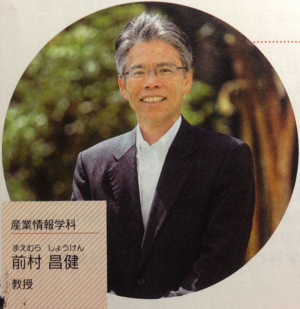

前村ゼミ
前村 昌健（まえむら しょうけん）教授
専門分野／経済学、地方財政論、財政学
担当科目／経済学概論、地域財政論、パブリックファイナンス
研究テーマ／「地域振興と公共部門の役割」
ゼミの概要
大まかに言えば沖縄県や市町村の地域振興について研究しています。沖縄県の場合、地域経済が財政に大きく依存していることから財政の役割が重要です。現在は、平成22年度からはじまった沖縄21世紀プランという新しい計画をとりあげ、政策の内容や効果について学習しています。また、法政大学の関口ゼミと毎年、交互に論文報告会を開催しており、お互いの知識を高め交流してきました。
ゼミ学生の就職希望については、おおよそは民間企業を志望していますが、公務員を希望する学生もおります。これまでサンエーやジャスコ、JA、日本郵政をはじめとして糸満市役所や地方中級（学校事務）といった行政にも就職しています。